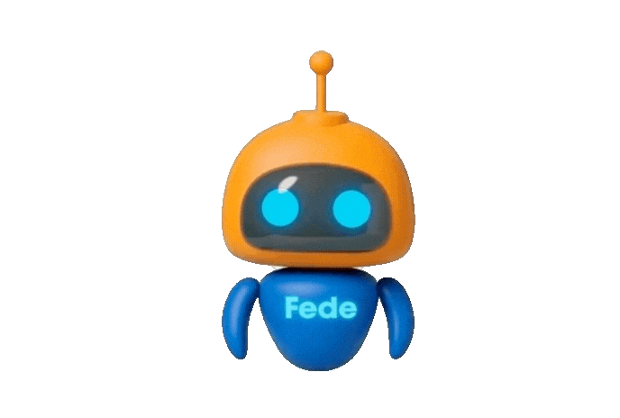

FICDE
Modulo Técnicas profesionales de fade y cortes contemporáneos

Espacio de Repaso Interactivo
Donde el conocimiento se convierte en acción
Síntesis
Técnicas de corte contemporáneo en barbería, incluyendo seccionamiento, manejo y regulación de máquinas, control de alturas y guías, transiciones, texturizado, corrección de imperfecciones y reconocimiento de tendencias actuales.
Análisis Crítico
Errores técnicos frecuentes en cortes de barbería relacionados con seccionamiento, regulación de la máquina, líneas guía, transiciones y simetría, así como exceso de texturizado, sobrecorrección e interpretación inadecuada de referencias visuales.
Escenarios
Adaptación y resolución de situaciones frecuentes en cortes y degradados, considerando características del cabello, cuero cabelludo, piel, rostro y necesidades del cliente, junto con correcciones técnicas y recomendaciones de mantenimiento.
Práctica
Secuencia práctica de corte y degradado profesional, incluyendo seccionamiento, creación y eliminación de líneas guía, transiciones, conexión con tijera, texturizado, definición de contornos y revisión final de simetría.